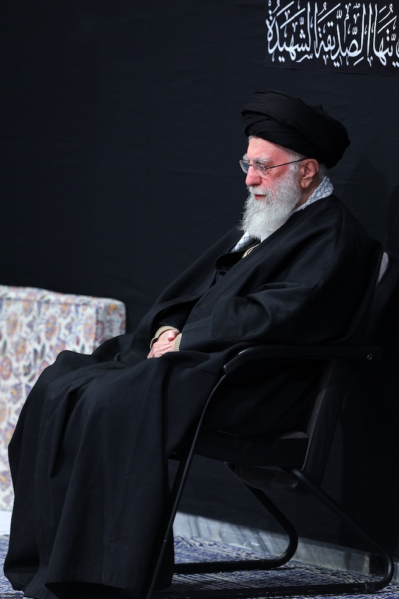

بِسْمِ اللَّهِ الرَّحْمَٰنِ الرَّحِيمِ
اللّهُمَّ صَلِّ عَلی فاطِمَةَ وَ اَبیها
وَ بَعْلِها وَ بَنیها
وَ سِرِّ الْمُسْتَوْدَعِ فیها
بِعَدَدِ ما اَحَاطَ بِهِ عِلْمُکَ
رزق فاطمی
ختم جمعی صلوات به مناسبت ایام فاطمیه
«من رزق یک سال کشور را در شبهای فاطمیه میگیرم.»
رهبر شهید

سهمی در این رزق داشته باش؛
با هم، در یک ذکر عاشقانه همراه شویم.